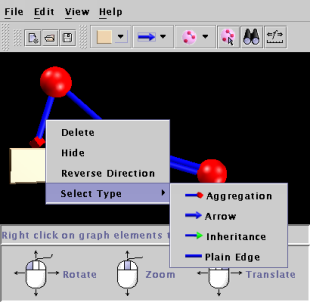

Back to contents page
Adding Nodes and Edges
When you start Wilma you will see the following window:
You start with an empty canvas (the black area). To add your
first node click the "add node" button... (highlighted above).
A single node will appear in the centre of the canvas:
Note that the message panel provides hints for what to do in any given
situation.
Now if you right click on the new node a menu will appear:
If you select the first option from this menu: "Add Node..." another
node will appear attached to the first node by an edge. Repeat this
to create a three connected nodes:
Note that the graph may not be in quite the same orientation as shown
above. You can rotate, zoom or translate the scene by clicking anywhere
on the canvas not occupied by a node or an edge and dragging. Dragging
with the left mouse button rotates, middle button zooms and the right button
translates. The bottom panel in wilma shows some pictures to remind
you how to use the mouse to change the orientation.
Note that if you don't have a middle button holding down the "Alt" key
at the same time as the left mouse button does the same thing.
Now right click on the leftmost node and this time choose the second
option: "Add Edge...". You will see that the node you chose to add
an edge to has turned yellow, indicating that it's waiting for you to select
another node for the other end of the edge. You could cancel the operation
at this stage by left clicking on the yellow node. But don't do that
;-)... left click on the rightmost node. A new edge will appear
forming a triangle.
Note that you can add disconnected nodes using the "Add Node" button
in the toolbar (the first button we used). Try that now. You
can also create new edges by clicking on the "Add Edge" button... you will
then be required to select two nodes and then press the "OK" button that
appears in the message panel. Create an edge between the new disconnected
node you just created and one of the nodes in the triangle:
Note that if you repeat this action, to create two edges between the
same two nodes, both edges will be visible:
Note that there are different types of nodes and edges available... if you
click on the little arrows beside the "Add Node" button and the "Add Edge"
button you will be offered a selection... when you chose a new type of node
or edge that new type will become the default type that is created. The
pictures on the respective buttons will change to remind you which one is
currently the default:

In the picture above different node and edge types have been used. You
can also change the type for an edge by right clicking on the edge:

Back to contents
page